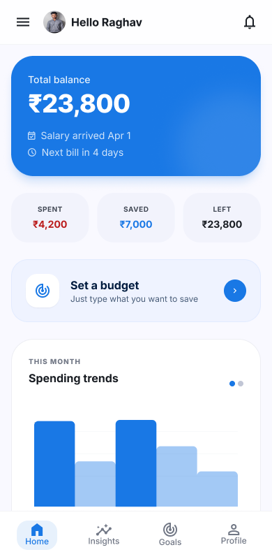
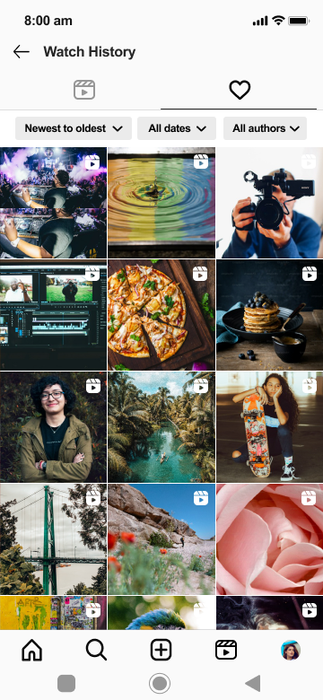
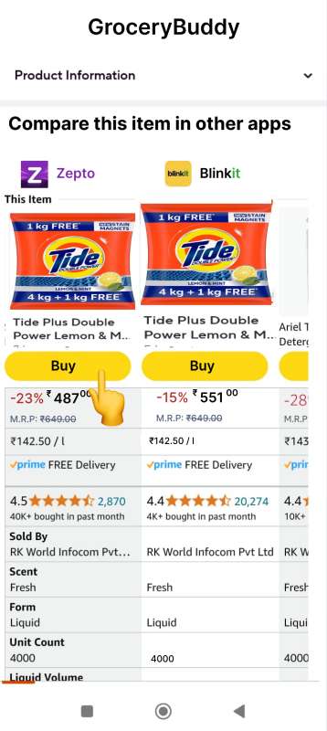
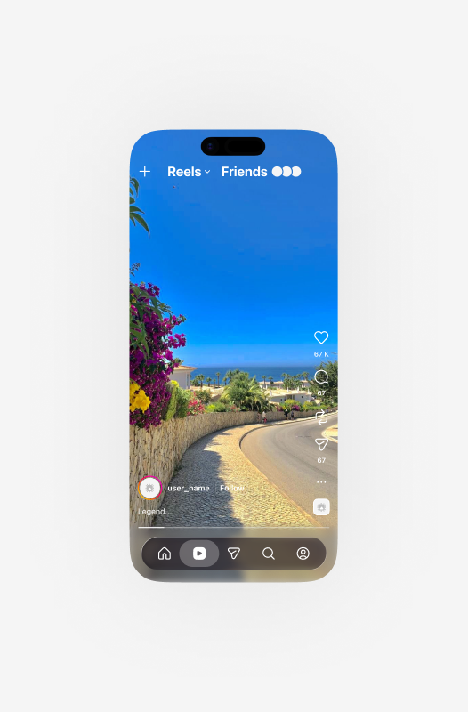
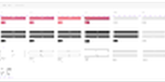
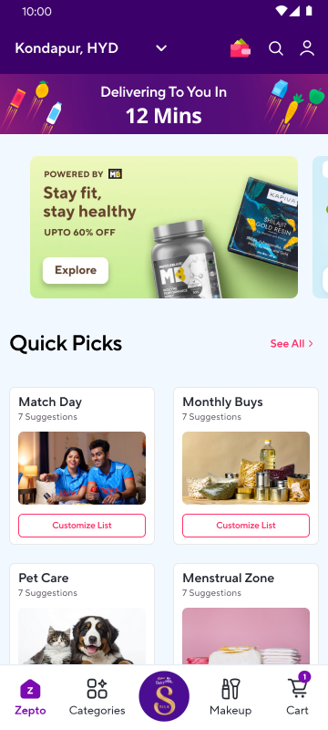

Virasat — The Exotic Veg — Restaurant Website
Can a 4.6★, 2,373-review restaurant get a web presence that matches its reputation — priced menu and all?
A website concept for a real pure-vegetarian restaurant in Nizampet, Hyderabad — built by prompting Claude Code directly from a real Google Maps listing, with a fully priced 13-category menu. Unsolicited concept, not affiliated with the business.

Jaquelines Flowers — Bilingual Florist Website
Can a real, bilingual family florist get a website that actually serves both halves of its customer base?
A website concept for a real family-owned florist in Los Angeles — built by prompting Claude Code directly from a real Google Maps listing, with a language switcher designed around the shop's real bilingual service. Unsolicited concept, not affiliated with the business.

The Bun-Wigi Bistro — Real Restaurant Website
Can a real, 4.7★ restaurant get a web presence that matches its reputation — built by prompting Claude Code directly, no Figma?
A full website for an actual Pan-Asian & Continental restaurant in Banjara Hills, Hyderabad — real menu, real Google rating, real reservation and delivery links. Designed and shipped end-to-end via "vibe coding," then pitched to the business. Unsolicited concept, not affiliated with the business.

Flow — Fintech App
How do you make budgeting feel like a conversation, not a chore?
End-to-end fintech mobile UI: balance dashboard, spending trends, budget setup, and goal tracking. I designed and decided the concept, using Google Stitch to explore early directions and Claude to refine copy and hierarchy.

Instagram Watch History — Case Study
How do you add a new feature to 2B users without breaking what they already know?
Designed a Watch History feature within Instagram's existing design system — zero new patterns introduced. Full case study: discovery, user flow mapping, wireframes, and hi-fi screens with filter and grid views.

GroceryBuddy — Price Comparison App
How might you cut grocery comparison time — without asking users to open a third app?
End-to-end product design for a cross-platform grocery price comparison app. Research, wireframes, and a hi-fi prototype with delivery-time filtering, a side-by-side comparison table, and a seamless redirect flow.

Instagram — AI-Powered Save Search
What if finding a saved Reel felt as easy as describing what you remember?
Designed an AI-powered Collections search for Instagram — natural language replaces manual folders. Users type what they want, AI matches across existing collections or creates a new one instantly.

Airbnb — UX Study
Can you redesign trip booking so stays, experiences, and checkout feel like one journey?
Hypothesis-driven UX exploration of Airbnb's booking flow. Covers assumption mapping, UI iteration sprints, and asset organisation — the full messy-middle of collaborative UX research made visible.

Zepto — Quick Picks
How might users reorder their weekly groceries without searching for each item again?
Designed "Quick Picks" for Zepto — pre-made, occasion-based shopping lists (Match Day, Weekly Buys, Monthly Buys) that users can customise and drop to cart in seconds instead of searching item by item.